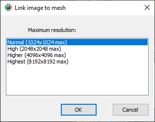

|
|
Toolbar:
Menu: CAD-Earth > Mesh commands > Link image to mesh
|
|
|
Command line: CE_LINKIMGTOMESH Prompts:
Select mesh: Select image to link: CAD-Earth version: Plus, Premium. |
.png)
.png)
Command description:
Use this command to associate an existing image in the drawing to a terrain mesh. If you open the mesh in the Mesh Viewer, the image will be projected on the mesh instead of visualizing it with a solid color. Once you link an image to a terrain mesh, if you move, rotate or scale the mesh the image will be updated accordingly. You can select the image resolution from Normal (1024 pixels max.), High (2048 pixels max.), Higher (4096 pixels max.) and Highest (8192 pixels max).

Dialog box to link an image to a mesh
Tips:
•To place the image behind the mesh, use the DRAWORDER command, default option <Back>.
•A file with a DDX extension will be created in the same path as the current drawing. If you open the drawing in another computer, this file must be located according to the path type selected (at the full or relative path or in the same path as the drawing file).
•The image resolution will be adjusted to the maximum resolution of the selected image. Per example, if you have selected the highest resolution (8192 pixels max.) and the original image have a resolution of 1024 pixels or less, the Normal resolution will be used when linking the image to the mesh.
•The raster image must be placed in the same location as the mesh before using this command. The image will be projected onto the mesh.
•The image projected on the mesh will allow you to identify vegetation and building areas if you wish to remove them using the command to flatten vertices.
Related topics:
Copyright © 2023 Arqcom Software
Google Earth© is a registered trademark of Google inc. All other trademarks are the property of their respective owners.